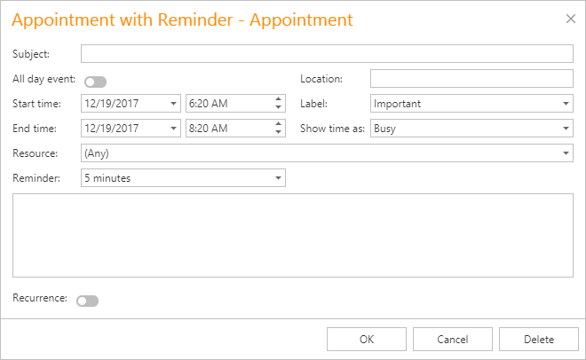

Create an Appointment
To create a new appointment, click within the Scheduler's time cell area to select the cell(s). This makes a smart tag appear:

Click it to invoke the default popup menu:

The default menu items highlighted in the illustration are intended for creating new appointments.
New Appointment
Invokes the Edit Appointment dialog shown below.
The Start time and End time values are initially set to the current date and time selection's start and end boundaries. The Show time as field is set to Busy. The Resource field value is set to the selected cell's resource. It can also be Any when appointments are not grouped by resources.

Complete the Subject and Location fields. If necessary, drop lines of text into the text box at the bottom of the dialog to display it within an appointment in Day View or Work Week View.
You can switch the appointment's Reminder on to enable notifications.
New All Day Event
Invokes the Edit Event window, which is used to create a new all-day appointment (also called an 'all-day event'). The window is the same as the Edit Appointment, except that, in this case, the All day event option is checked, its time range is measured in days (not hours) and it is marked as Free. The appointment can be transformed into the all-day event and vice-versa by selecting this check box.
New Recurring Appointment
All appointments the Scheduler maintains can either be simple (non-recurring) or recurring (occur multiple times with a predefined time interval).
Selecting this menu item invokes the Edit Appointment dialog used to create a new appointment, extended with the Recurrence feature which allows specifying the recurrence pattern for the new appointment.

New Recurring Event
Selecting this menu item invokes the Edit Event window used to create a new all-day appointment, extended with the Recurrence feature which allows specifying the recurrence pattern for the new event.
See Make a Series of Recurring Appointments for more information.